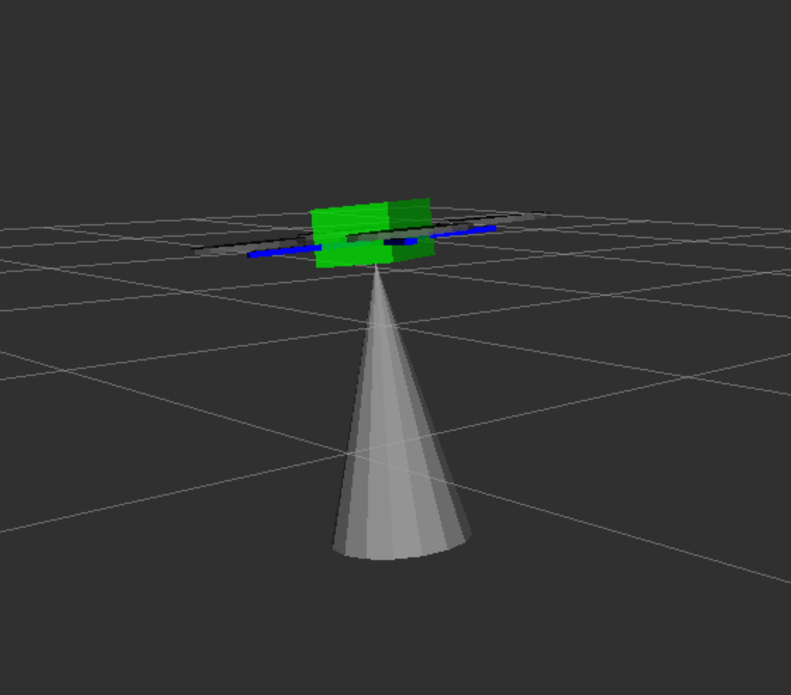

Рекомендуемая для Technic модель дальномера – STM VL53L1X. Это дальномер может измерять расстояния от 0 до 4 м, при этом обеспечивая высокую точность измерений.
На образе для OPi предустановлен соответствующий ROS-драйвер.
Подсказка Перед включением дальномера необходимо снять с него защитную пленку.
Подключите дальномер по интерфейсу I²C к пинам 3V, GND, SCL и SDA:
Если обозначенный пин GND занят, можно использовать другой свободный, используя распиновку.
Подсказка По интерфейсу I²C возможно подключать несколько периферийных устройств одновременно. Используйте для этого параллельное подключение.
Подключитесь по SSH и отредактируйте файл ~/technic_ws/src/technic/technic/launch/technic.launch так, чтобы драйвер VL53L1X был включен:
<arg name="rangefinder_vl53l1x" default="true"/>
По умолчания драйвер дальномера передает данные в Pixhawk (через топик /rangefinder/range). Для просмотра данных из топика используйте команду:
rostopic echo /rangefinder/range
Подсказка Для корректной работы лазерного дальномера с полетным контроллером рекомендуется использование специальной сборки PX4 для Technic.
Для использования данных с дальномера в PX4 должен быть сконфигурирован.
При использовании EKF2 (SYS_MC_EST_GROUP = ekf2):
EKF2_HGT_MODE = 2 (Range sensor) – при полете над горизонтальным полом;EKF2_RNG_AID = 1 (Range aid enabled) – в остальных случаях.Для получения данных из топика создайте подписчика:
import rospy
from sensor_msgs.msg import Range
rospy.init_node('flight')
def range_callback(msg):
# Обработка новых данных с дальномера
print('Rangefinder distance:', msg.range)
rospy.Subscriber('rangefinder/range', Range, range_callback)
rospy.spin() # дальнейший код программы
Также существует возможность однократного получения данных с дальномера:
from sensor_msgs.msg import Range
# ...
dist = rospy.wait_for_message('rangefinder/range', Range).range
Для построения графика по данным с дальномера может быть использован rqt_multiplot.
Для визуализации данных может быть использован rviz. Для этого необходимо добавить топик типа sensor_msgs/Range в визуализацию:
